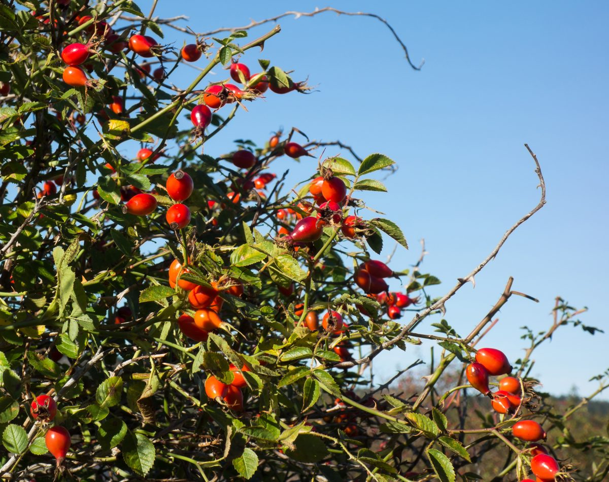

店のこと
店のこと
お店について確認できているのは、所在地・電話番号・Instagramのアカウントだけです。
このページの「想像してみる」部分は、制作側が想像して書いたものです。お店の実際の様子・考え・メニューとは関係がありません。
確認できていること
- 店名は「Fika Mawata」、業種はカフェ
- 所在地は京都府宮津市波路町２３４８(〒626-0064)
- 電話番号は 090-9095-4870
- Instagramは @mawata3935
- 営業時間・定休日・メニュー・価格・ご予約・駐車場は準備中

想像してみる
綴りから思い浮かべた、ひと休みの時間
由来は分かりません。制作側は「Fika」という綴りから、北欧の言葉でひと息つく時間を指す語を連想しました(お店の考えとは関係のない、制作側の連想です)。そこから、温かい飲み物と小さな灯りのある時間を思い描いて、このページのテーマを決めました。
下の写真は、その連想で選んだ国外・撮影地不明のイメージ写真です。


